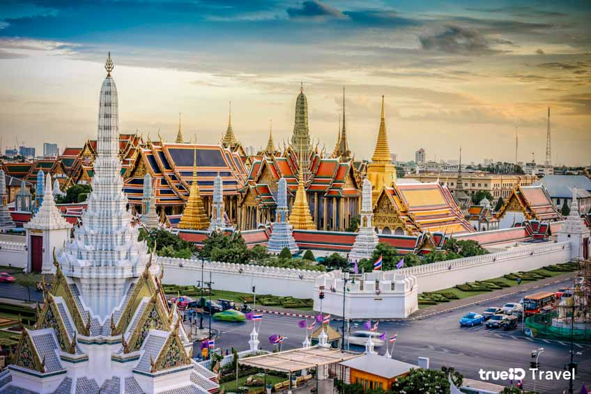
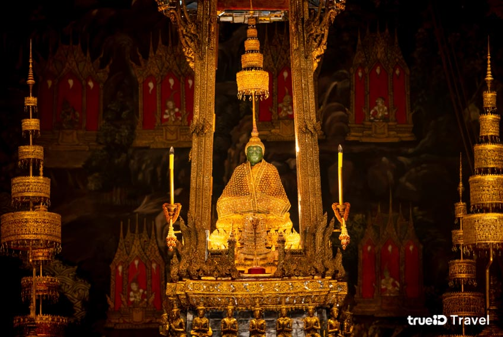
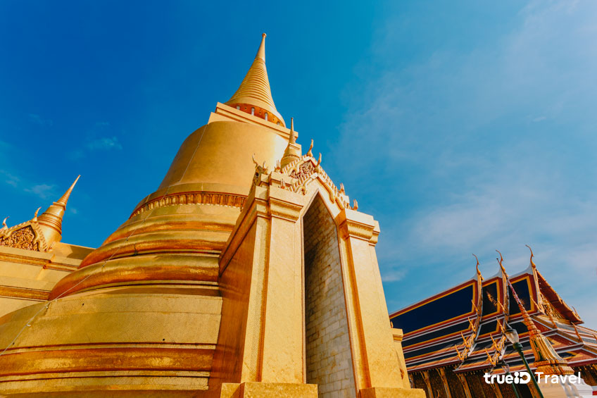
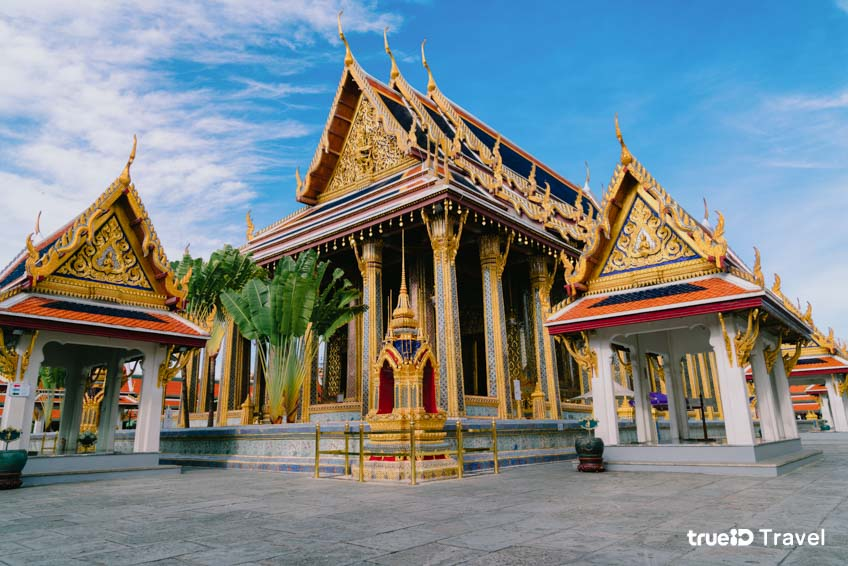
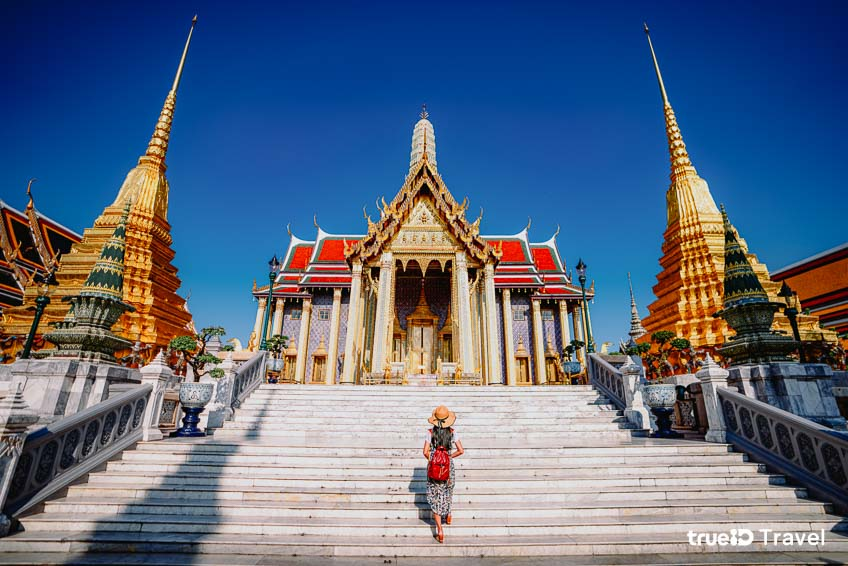

1. ประวัติวัดพระแก้ว
วัดพระแก้ว สร้างขึ้นพร้อมกับการสร้างพระบรมมหาราชวัง และการสถาปนากรุงเทพมหานครเป็นราชธานี ในสมัยพระบาทสมเด็จพระพุทธยอดฟ้าจุฬาโลกมหาราช รัชกาลที่ 1 เมื่อปี พ.ศ. 2325 ค่ะ โดยเป็นสร้างตามประเพณีการสร้างพระอารามหลวงในเขตพระราชวังที่มีมาตั้งแต่อดีตก็คือ วัดมหาธาตุ ในพระราชวังสมัยกรุงสุโขทัย และ วัดพระศรีสรรเพชญ์ ในพระราชวังสมัยกรุงศรีอยุธยา นั่นเอง โดยจะเป็นวัดที่ไม่มีเขตสังฆาวาส ซึ่งเริ่มแรกภายในวัดมี พระเจดีย์ พระอุโบสถ พระวิหาร หอพระมณเฑียร และหอไตร ต่อมาในปี พ.ศ. 2331-2352 ได้มีการสร้างพระมณฑปขึ้นแทนหอพระมณเฑียรธรรมหลังเดิม และสร้างหอพระมณเฑียรธรรมขึ้นใหม่ ต่อมามีการสร้างหอระฆังระหว่างพระอุโบสถกับพระระเบียงด้านใต้ และแขวนหอระฆังที่ขุดพบในช่วงที่ทรงปฏิสังขรณ์ วัดระฆังโฆสิตารามวรมหาวิหาร นอกจากนี้ยังโปรดเกล้าฯ ให้สร้าง หอพระนาก ขึ้นทางมุมพระระเบียงด้านทิศตะวันตกเฉียงเหนือค่ะ และหลังสถาปนาสิ่งต่างๆ ในพระอารามแล้ว จึงมีงานสมโภชพระพุทธมหามณีรัตนปฏิมากร และฉลองวัดพระศรีรัตนศาสดารามขึ้นอย่างยิ่งใหญ่ในปี พ.ศ.2352 นั่นเอง หลังจากนั้น ตั้งแต่รัชกาลที่ 3 จนถึง รัชกาลที่ 5 ก็ทรงปฏิสังขรณ์ วัดพระแก้ว เรื่อยมา เนื่องจากเป็นวัดสำคัญ จึงต้องมีการปฏิสังขรณ์ใหญ่ทุก 50 ปี มีการซ่อมแซม และสร้างเพิ่มเติม เช่น ภาพจิตรกรรมฝาผนังในพระอุโบสถ เก๋งบอกพระปริยัติธรรม รูปยักษ์ 6 คู่ พระพุทธรูปฉลองพระองค์รัชกาลที่ 1 และรัชกาลที่ 2 หอพระคันธารราษฎร์ มณฑปยอดปรางค์ พระบรมราชานุสาวรีย์รัชกาลกรุงรัตนโกสินทร์ ประจำรัชกาลที่ 1 รัชกาลที่ที่ 2 รัชกาลที่ที่ 3 รัชกาลที่ 4 และรัชกาลที่ 5 ต่อมาในช่วงสมัยรัชกาลที่ 6 พระบาทสมเด็จพระมงกุฎเกล้าเจ้าอยู่หัว จึงทรงโปรดเกล้าฯ ให้สร้าง พระที่นั่งศิวาลัยมหาปราสาท ขึ้นที่พระบรมมหาราชวังเพื่อประดิษฐานพระบรมรูป และอัญเชิญพระบรมรูป พระบาทสมเด็จพระเจ้าอยู่หัวทั้ง 5 รัชกาล มาประดิษฐานที่พระพุทธปรางค์ปราสาท และพระราชทานนามใหม่ว่า ปราสาทพระเทพบิดร เมื่อวันที่ 6 เมษายน พ.ศ. 2461 จึงมีการกราบถวายบังคมพระบรมรูปสมเด็จพระบูรพมหากษัติยาธิราชเป็นประจำทุกปีเป็นประเพณีสืบมา ในวันที่ 6 เมษายนนั่นเอง จากนั้นในรัชสมัยของ รัชกาลที่ 7-รัชกาลที่ 9 ก็มีการซ่อมแซม บูรณปฏิสังขรณ์ วัดพระแก้ว เรื่อยมา และในในโอกาส สมโภชกรุงรัตนโกสินทร์ 200 ปี สมัยรัชกาลที่ 9 ทรงพระกรุณาโปรดเกล้าฯ ให้ซ่อมภาพจิตรกรรมฝาผนัง โดยพยายามรักษาภาพของเดิมไว้ให้มากที่สุด ได้ดำเนินซ่อมภาพจิตรกรรมเสร็จทันการฉลองเมื่อ ปี พ.ศ.2525
2. ประวัติพระแก้วมรกต
พระแก้วมรกต หรือ พระพุทธมหามณีรัตนปฏิมากร เป็นพระพุทธรูปคู่บ้านคู่เมืองของประเทศไทยในปัจจุบันค่ะ โดยประดิษฐานใน วัดพระศรีรัตนศาสดาราม หรือ วัดพระแก้ว โดยแกะสลักจากหยกอ่อนเนไฟรต์สีเขียวดังมรกต เป็นศิลปะสมัยก่อนเชียงแสนถึงศิลปะเชียงแสน สันนิษฐานในการพบครั้งแรก คือ พระแก้วมรกต ประดิษฐานในเจดีย์วัดป่าญะ เมืองเชียงราย หรือ วัดพระแก้ว จังหวัดเชียงราย ในปัจจุบัน จากนั้น พระเจ้าสามฝั่งแกน แห่งเมืองเชียงใหม่ ได้อัญเชิญ พระแก้ว มาประดิษฐานที่เมืองเชียงใหม่ แต่ ช้างทรงพระแก้ว เดินทางไปยังลำปางแทน เชียงใหม่เห็นว่าลำปางก็อยู่ในอาณาจักรล้านนาเช่นกัน จึงอัญเชิญพระแก้วไปไว้ที่ วัดพระแก้วดอนเต้า จนในสมัยพระเจ้าติโลกราช ได้เชิญพระแก้วมรกตมายังเชียงใหม่ มาจนถึงสมัยพระเจ้าไชยเชษฐาแห่งล้านช้าง มาครองเมืองเชียงใหม่ ได้เสด็จกลับ หลวงพระบาง ก็เชิญพระแก้วมรกตไปด้วยพร้อมกับพระพุทธสิหิงค์ แต่ภายหลังเมืองเชียงใหม่ได้พระพุทธสิหิงค์คืนมา ต่อมา ล้านช้าง ได้ย้ายเมืองหลวงจาก หลวงพระบาง มา เวียงจันทน์ ก็อัญเชิญพระแก้วมรกตมาด้วย เมื่อถึงสมัยของ สมเด็จพระเจ้าตากสินมหาราช ทรงสถาปนา กรุงธนบุรี ขึ้นเป็นเมืองหลวงแห่งใหม่ ทรงอัญเชิญพระแก้วมรกต และพระบาง มาจากเวียงจันทน์ ประดิษฐานไว้ที่ วัดอรุณราชวรารามราชวรมหาวิหาร ต่อมา พระบาทสมเด็จพระพุทธยอดฟ้าจุฬาโลกมหาราช เสด็จเถลิงถวัลยราชสมบัติขึ้นเป็นพระปฐมบรมกษัตริย์แห่งพระบรมราชวงศ์จักรี จึงทรงอัญเชิญ พระแก้วมรกต ลงบุษบกในเรือพระที่นั่ง เสด็จข้ามฝั่งแม่น้ำเจ้าพระยา มาประดิษฐานยัง พระอุโบสถพระอารามใหม่ วัดพระแก้ว แล้วพระราชทานนามพระอารามว่า "วัดพระศรีรัตนศาสดาราม" จนถึงปัจจุบันนี้ สำหรับ พระบาง นั้นได้คืนให้แก่ หลวงพระบาง ประเทศลาว นอกจากนี้ ในวันแรม 1 ค่ำ เดือน 4 (ช่วงเดือนมีนาคม) เดือน 8 (วันเข้าพรรษา) และเดือน 12 (หลังวันลอยกระทง 1 วัน) จะมีการเปลี่ยนเครื่องทรงขององค์พระแก้วมรกต โดยมี 3 เครื่องทรง คือ เครื่องทรงฤดูร้อน ฤดูฝน และฤดูหนาว
3.1 พิพิธภัณฑ์วัดพระศรีรัตนศาสดาราม
พิพิธภัณฑ์วัดพระศรีรัตนศาสดาราม สร้างขึ้นในสมัยรัชกาลที่ 4 โดยแต่เดิมที่นี่เป็นโรงกษาปณ์ใช้ผลิตเงินตราเพื่อใช้ในประเทศ ต่อมาในปี พ.ศ. 2525 ในวาระการสมโภชกรุงรัตนโกสินทร์ 200 ปี มีการบูรณปฏิสังขรณ์วัดพระแก้ว ได้มีการเปลี่ยนแปลงโรงกษาปณ์แห่งนี้มาเป็นพิพิธภัณฑ์ โดยภายในรวบรวมวัตถุสำคัญต่างๆ เช่น พระแท่นที่ประทับของพ่อขุนรามคำแหงมหาราช รูปพระราชพิธีอินทราภิเษก พระแท่นมนังคศิลาบาตร เป็นต้น
3.2 หอราชกรมานุสร และหอพงศานุสร
หอราชกรมานุสร และหอพงศานุสร ภายในประดิษฐาน พระพุทธรูปประจำรัชกาลต่างๆ ในสมัยอยุธยา และในสมัยรัตนโกสินทร์ ค่ะ มีลักษณะเป็นอาคารทรงไทย ภายในมีภาพจิตรกรรมของขรัวอินโขร่ง ซึ่งเป็นภาพพระราชพงศาวดารกรุงรัตนโกสินทร์ อีกทั้งที่นี่ยังเป็นสถานที่ในการถือน้ำพระพิพัฒน์สัจจา โดยจะตั้งเครื่องสักการบูชาพระพุทธรูป ในหอพระราชพงศานุสร
3.3 ปราสาทพระเทพบิดร
ปราสาทพระเทพบิดร เป็นอาคารจัตุรมุขทรงไทย ยกยอดปราสาทเป็นทรงปรางค์ ภายในประดิษฐาน พระบรมรูปสมเด็จพระบูรพมหากษัตริยาธิราชเจ้า ในพระบรมราชจักรีวงศ์ทั้ง 5 พระองค์ (รัชกาลที่ 1-5) เดิมสร้างขึ้นในปี พ.ศ.2398 ในสมัยรัชกาลที่ 4 และเปลี่ยนเป็น ปราสาทพระเทพบิดร ในสมัยรัชกาลที่ 6 ค่ะ